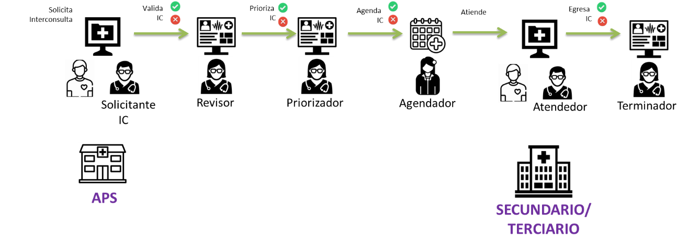

Links: Tabla de contenidos | Reporte QA | Issues
Show Usage
This fragment is available on index.html
This publication includes IP covered under the following statements.
| Type | Reference | Content |
|---|---|---|
| web | snomed.info | 84100007 |
| web | snomed.info | 103696004 |
| web | minsal.cl |
|
| web | hl7chile.cl |
|
| web | interoperabilidad.minsal.cl |
IG © 2024+ Unidad de Interoperabilidad - MINSAL
. Package hl7.fhir.cl.minsal.tei#0.2.2 based on FHIR 4.0.1
. Generated 2026-04-29
Links: Tabla de contenidos | Reporte QA | Issues |
| web | github.com | Links: Tabla de contenidos | Reporte QA | Issues |
| web | datos.gob.cl | Establecimiento Destino Codigo ejemplos hechos en base a este documento con los Códigos DEIS del establecimientos |
| web | drive.google.com | Un profesional clínico debe realizar la priorización de la solicitud de interconsulta, en función de la categorización definida, considerando patología, gravedad y determinantes sociales del paciente. Esto puede suceder en el establecimiento de Atención Primaria de Salud o nivel secundario según acuerdo entre ambos niveles y el Servicio de Salud. Acá se pueden verificar si existe alguna causa de salida de Lista de Espera, por ejemplo, en caso de defunción, GES, no beneficiario, entre otras. (Según Norma Técnica N°118 ) |
| web | drive.google.com | En este acto el paciente sale de la Lista de Espera, ya sea porque fue atendido o por alguna de las causales de salida de la Lista de Espera según la Norma Técnica N°118 . Esto puede ocurrir de forma automática por definiciones del sistema informático, o mediante un funcionario administrativo. |
| web | en.wikipedia.org | Both Bundle.link and Bundle.entry.link are defined to support providing additional context when Bundles are used (e.g. HATEOAS ). |
| web | datos.gob.cl | Código DEIS del establecimiento según Códigos del establecimientos |
| web | datos.gob.cl | Organization LE según Códigos DEIS del establecimientos |
| web | snomed.info | 84100007 |
| web | snomed.info | 103696004 |
| web | drive.google.com | Acá se puede verificar la existencia de alguna de las causales de salida de Lista de Espera, por ejemplo, en caso de defunción, GES, no beneficiario, entre otras. (Según Norma Técnica N°118 ) |
| web | drive.google.com | Acá se puede verificar la existencia de alguna de las causales de salida de Lista de Espera, por ejemplo, en caso de defunción, GES, no beneficiario, entre otras. (Según Norma Técnica N°118 ) |
| web | drive.google.com | En este acto el paciente sale de la Lista de Espera, ya sea porque fue atendido o por alguna de las causales de eliminación de la Lista de Espera. (Según Norma Técnica N°118 ). |
| web | drive.google.com | El usuario es egresado de la Lista de Espera por alguna de las 20 causales definidas en la Norma Técnica N°118 . |
| web | www.iso.org |
ISO maintains the copyright on the country codes, and controls its use carefully. For further details see the ISO 3166 web page: https://www.iso.org/iso-3166-country-codes.html
Show Usage
|
| web | drive.google.com | Este profesional pertenece al establecimiento secundario. También puede verificar si existe alguna causa de salida de Lista de Espera, por ejemplo, en caso de defunción, GES, no beneficiario, entre otras. (Según Norma Técnica N°118 ). |
| web | drive.google.com | Este/a funcionario/a tambien puede verificar si existe alguna causa de salida de Lista de Espera, por ejemplo, en caso de defunción, GES, no beneficiario entre otras. (Según Norma técnica N°118 ). |
| web | drive.google.com | Corresponde al funcionario administrativo que ejecuta la salida del usuario/a paciente de lista de espera, en función de si recibió la atención de especialidad, o por alguna de las otras causales de eliminación de la Lista de Espera (Según Norma Técnica N°118 ). |
tree-filter.png 
|
|
workflow.png  |